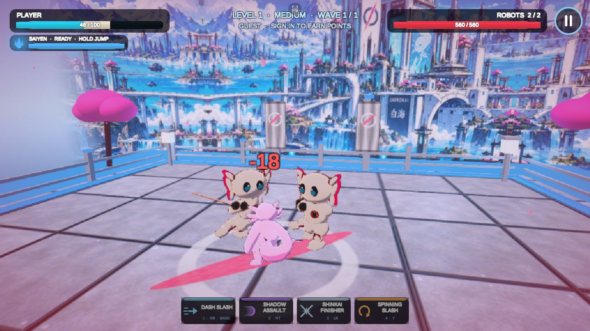

Game development / Unity WebGL
Battle of Shinkai
An AxoRonin samurai battle game you can play right in the browser.
A 3D sword-combat game I’m building in Unity 6 and shipping as a WebGL test build for phone and desktop browsers. Pick a fighter, chain skills together, and fight your way across the continent of Shinkai.
- Sword combatSkills like Dash Slash, Shadow Assault, Dragon Strike, Void Slash and Spinning Slash, plus a Saiyen Mode power-up and Perfect Parries.
- Adventure mapVillages across the Shinkai world map, five missions each, with Easy, Medium and Hard difficulty.
- Private 1v1 multiplayerCreate a room, share its code, and duel a friend. The room server decides hits, damage and the result.
- AxoRonin NFT fightersAn optional, read-only Solana wallet link lets holders play as their AxoRonin. Free characters are always available, and the game never asks for a signature or transaction.
- My role
- Game development
- Status
- Playable test build
- Engine
- Unity 6 / WebGL
- Platforms
- Desktop & mobile browsers
Behind the project: Battle of Shinkai
The direction
A samurai battle game set in the AxoRonin world, bringing my interest in game development and Web3 together in a project of my own.
How it has grown
Built in phases: a combat overhaul with fluid whole-body animation and hit-stop, new fighting skills and Saiyen Mode, then the Adventure world map and private 1v1 rooms.
Play safely
Guests can play without signing in. Connecting a wallet is optional and read-only; it is only used to check which AxoRonin characters you own.